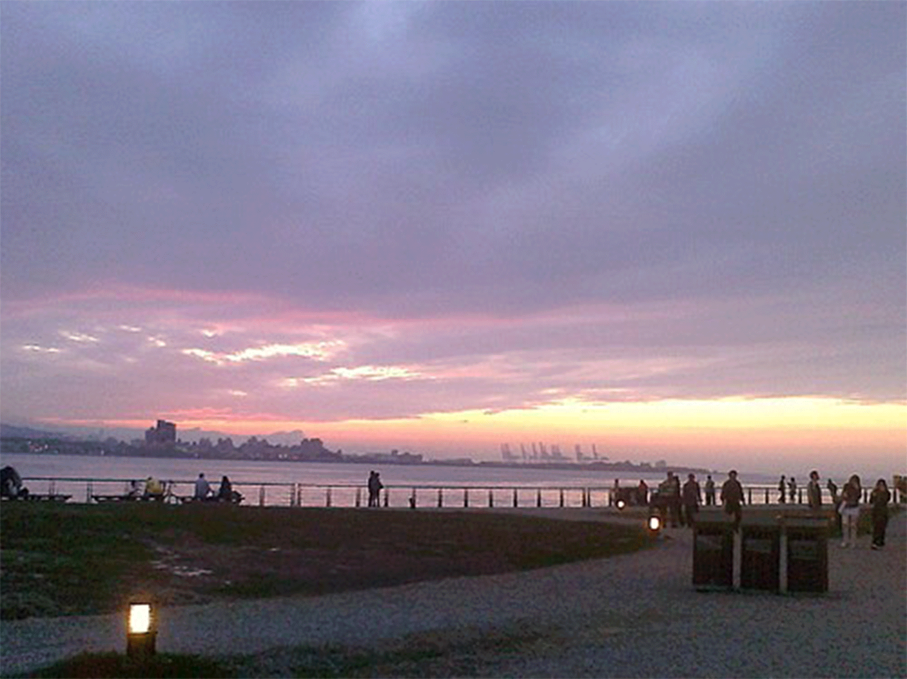

|
|

淡水老街 淡水老街有濃濃古早味的餅舖、雜貨店，也有賣潮流服飾與玩具， 還有著名的傳統人氣美食，像是阿給、魚丸、魚酥、阿婆鐵蛋等。 到了傍晚，還能在金色水岸步道欣賞夕陽落入海面的浪漫景色。 Read more
北投公園
北投公園有各式各樣動、植物群聚，周邊還有地熱谷等著名景點，是著名的溫泉旅館區。
|
|

金色水岸 金色水岸是一段沿著淡水河右岸所建的景觀路線， 有林蔭步道、親水河岸、水上舞台及休憩座椅等設施。 無論是朝陽升起時的活力，還是夕陽西下時的浪漫，皆有不同的炫麗風情。 Read more
台北市立圖書館北投分館 北投圖書館是台灣第一座綠色建築圖書館，座落於生態豐富的北投公園內，並和溫泉博物館為鄰， 不僅有小溪流過，更有大樹環抱，周圍環境優美，遠看就像一座藏身在森林中的樹屋。 Read more |
|
淡水漁人碼頭 淡水漁人碼頭近年來擴建停車場、碼頭及觀光魚市，結合鄰近景點開發成多功能的觀光休閒漁港。 在傍晚前往漁人碼頭欣賞夕陽美景，晚間白色的船形情人橋在五彩霓虹燈下更顯浪漫。 Read more
北投溫泉博物館 「北投溫泉博物館」的前身是北投溫泉公共浴場。 入口處在二樓，有涼亭、換鞋玄關，進入經樓梯下到一樓後有男女更衣室及個別的沐浴大池， 重要的賓客在南側還設有獨立的浴室和休息間。 Read more |